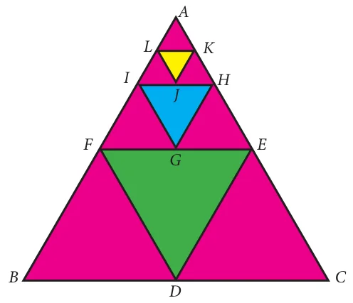
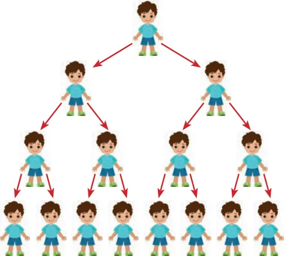

In the diagram given in Fig.2.13, \(\triangle DEF\) is formed by joining the mid points of the sides AB, \(BC\) and \(CA\) of \(\triangle ABC\). Then the size of the triangle \(\triangle DEF\) is exactly one-fourth of the size of \(\triangle ABC\). Similarly \(\triangle GHI\) is also one-fourth of \(\triangle DEF\) and so on. In general, the successive areas are one-fourth of the previous areas.
The area of these triangles are
\(\triangle ABC,\ \dfrac{1}{4}\triangle ABC,\ \dfrac{1}{4} \times \dfrac{1}{4}\triangle ABC, \ldots\)
That is, \(\triangle ABC,\ \dfrac{1}{4}\triangle ABC,\ \dfrac{1}{16}\triangle ABC, \ldots\)
In this case, we see that beginning with \(\triangle ABC\), we see that the successive triangles are formed whose areas are precisely one-fourth the area of the previous triangle. So, each term is obtained by multiplying \(\dfrac{1}{4}\) to the previous term.

As another case, let us consider that a viral disease is spreading in a way such that at any stage two new persons get affected from an affected person. At first stage, one person is affected, at second stage two persons are affected and is spreading to four persons and so on. Then, number of persons affected at each stage are 1, 2, 4, 8, … where except the first term, each term is precisely twice the previous term.
From the above examples, it is clear that each term is got by multiplying a fixed number to the preceding number.
This idea leads us to the concept of Geometric Progression.
Definition
A Geometric Progression is a sequence in which each term is obtained by multiplying a fixed non-zero number to the preceding term except the first term. The fixed number is called common ratio. The common ratio is usually denoted by \(r\).
2.9.1 General form of Geometric Progression
Let \(a\) and \(r \ne 0\) be real numbers. Then the numbers of the form \(a, ar, ar^2, \ldots ar^{n-1} \ldots\) is called a Geometric Progression. The number ‘\(a\)’ is called the first term and number ‘\(r\)’ is called the common ratio.
We note that beginning with first term \(a\), each term is obtained by multiplied with the common ratio ‘\(r\)’ to give \(ar, ar^2, ar^3, \ldots\)
2.9.2 General term of Geometric Progression
We try to find a formula for \(n^{th}\) term or general term of Geometric Progression (G.P.) whose terms are in the common ratio.
\(a, ar, ar^2, \ldots, ar^{n-1}, \ldots\) where \(a\) is the first term and ‘\(r\)’ is the common ratio. Let \(t_n\) be the \(n^{th}\) term of the G.P.
Then \(\quad \begin{aligned} t_1 &= a = a \times r^0 = a \times r^{1-1} \\ t_2 &= t_1 \times r = a \times r = a \times r^{2-1} \\ t_3 &= t_2 \times r = ar \times r = ar^2 = ar^{3-1} \\ &\ \ \vdots \\ t_n &= t_{n-1} \times r = ar^{n-2} \times r = ar^{n-2+1} = ar^{n-1} \end{aligned}\)
Thus, the general term or \(n^{th}\) term of a G.P. is \(t_n = ar^{n-1}\)
Note
If we consider the ratio of successive terms of the G.P. then we have
\(\dfrac{t_2}{t_1} = \dfrac{ar}{a} = r,\ \dfrac{t_3}{t_2} = \dfrac{ar^2}{ar} = r,\ \dfrac{t_4}{t_3} = \dfrac{ar^3}{ar^2} = r,\ \dfrac{t_5}{t_4} = \dfrac{ar^4}{ar^3} = r, \ldots\)
Thus, the ratio between any two consecutive terms of the Geometric Progression is always constant and that constant is the common ratio of the given Progression.
Progress Check
- A G.P. is obtained by multiplying \(\underline{\qquad}\) to the preceding term.
- The ratio between any two consecutive terms of the G.P. is \(\underline{\qquad}\) and it is called \(\underline{\qquad}\).
- Fill in the blanks if the following are in G.P.
- \(\dfrac{1}{8}, \dfrac{3}{4}, \dfrac{9}{2}, \underline{\qquad}\)
- \(7, \dfrac{7}{2}, \underline{\qquad}\)
- \(\underline{\qquad}, 2\sqrt{2}, 4, \ldots\)
Example 2.40
Which of the following sequences form a Geometric Progression?
(i) 7, 14, 21, 28, … (ii) \(\dfrac{1}{2}\), 1, 2, 4, … (iii) 5, 25, 50, 75, …
Solution
To check if a given sequence form a G.P. we have to see if the ratio between successive terms are equal.
- 7, 14, 21, 28, …
\(\dfrac{t_2}{t_1} = \dfrac{14}{7} = 2; \quad \dfrac{t_3}{t_2} = \dfrac{21}{14} = \dfrac{3}{2}; \quad \dfrac{t_4}{t_3} = \dfrac{28}{21} = \dfrac{4}{3}\)
Since the ratios between successive terms are not equal, the sequence 7, 14, 21, 28, … is not a Geometric Progression.
- \(\dfrac{1}{2}\), 1, 2, 4, …
\(\dfrac{t_2}{t_1} = \dfrac{1}{\frac{1}{2}} = 2; \quad \dfrac{t_3}{t_2} = \dfrac{2}{1} = 2; \quad \dfrac{t_4}{t_3} = \dfrac{4}{2} = 2\)
Here the ratios between successive terms are equal. Therefore the sequence \(\dfrac{1}{2}\), 1, 2, 4, … is a Geometric Progression with common ratio \(r = 2\).
- 5, 25, 50, 75,…
\(\dfrac{t_2}{t_1} = \dfrac{25}{5} = 5; \quad \dfrac{t_3}{t_2} = \dfrac{50}{25} = 2; \quad \dfrac{t_4}{t_3} = \dfrac{75}{50} = \dfrac{3}{2}\)
Since the ratios between successive terms are not equal, the sequence 5, 25, 50, 75,… is not a Geometric Progression.
Thinking Corner
Is the sequence \(2, 2^2, 2^{2^2}, 2^{2^{2^2}}, \ldots\) is a G.P.?
Example 2.41
Find the geometric progression whose first term and common ratios are given by (i) \(a = -7,\ r = 6\) (ii) \(a = 256,\ r = 0.5\)
Solution
- The general form of Geometric progression is \(a, ar, ar^2, \ldots\)
\(a = -7,\quad ar = -7 \times 6 = -42,\quad ar^2 = -7 \times 6^2 = -252\)
Therefore the required Geometric Progression is \(-7, -42, -252, \ldots\)
- The general form of Geometric progression is \(a, ar, ar^2, \ldots\)
\(a = 256,\quad ar = 256 \times 0.5 = 128,\quad ar^2 = 256 \times (0.5)^2 = 64\)
Therefore the required Geometric progression is 256, 128, 64,….
Progress Check
- If first term \(= a\), common ratio \(= r\), then find the value of \(t_9\) and \(t_{27}\).
- In a G.P. if \(t_1 = \dfrac{1}{5}\) and \(t_2 = \dfrac{1}{25}\) then the common ratio is \(\underline{\qquad}\).
Example 2.42
Find the \(8^{th}\) term of the G.P. 9, 3, 1,…
Solution
To find the \(8^{th}\) term we have to use the \(n^{th}\) term formula \(t_n = ar^{n-1}\)
First term \(a = 9\), Common ratio \(r = \dfrac{t_2}{t_1} = \dfrac{3}{9} = \dfrac{1}{3}\)
\(t_8 = 9 \times \left(\dfrac{1}{3}\right)^{8-1} = 9 \times \left(\dfrac{1}{3}\right)^7 = \dfrac{1}{243}\)
Therefore the \(8^{th}\) term of the G.P. is \(\dfrac{1}{243}\).
Example 2.43
In a Geometric progression, the \(4^{th}\) term is \(\dfrac{8}{9}\) and the \(7^{th}\) term is \(\dfrac{64}{243}\). Find the Geometric Progression.
Solution
\(4^{th}\) term, \(t_4 = \dfrac{8}{9} \Rightarrow ar^3 = \dfrac{8}{9} \qquad \ldots(1)\)
\(7^{th}\) term, \(t_7 = \dfrac{64}{243} \Rightarrow ar^6 = \dfrac{64}{243} \qquad \ldots(2)\)
Dividing (2) by (1) we get, \(\dfrac{ar^6}{ar^3} = \dfrac{\frac{64}{243}}{\frac{8}{9}}\)
\(r^3 = \dfrac{8}{27} \Rightarrow r = \dfrac{2}{3}\)
Substituting the value of \(r\) in (1), we get \(a \times \left[\dfrac{2}{3}\right]^3 = \dfrac{8}{9} \Rightarrow a = 3\)
Therefore the Geometric Progression is \(a, ar, ar^2, \ldots\) That is, \(3, 2, \dfrac{4}{3}, \ldots\)
Note
- When the product of three consecutive terms of a G.P. are given, we can take the three terms as \(\dfrac{a}{r}, a, ar\).
- When the products of four consecutive terms are given for a G.P. then we can take the four terms as \(\dfrac{a}{r^3}, \dfrac{a}{r}, ar, ar^3\).
- When each term of a Geometric Progression is multiplied or divided by a non–zero constant then the resulting sequence is also a Geometric Progression.
Example 2.44
The product of three consecutive terms of a Geometric Progression is 343 and their sum is \(\dfrac{91}{3}\). Find the three terms.
Solution
Since the product of 3 consecutive terms is given.
we can take them as \(\dfrac{a}{r}, a, ar\).
Product of the terms \(= 343\)
\(\begin{aligned} \dfrac{a}{r} \times a \times ar &= 343 \\ a^3 = 7^3 \Rightarrow a &= 7 \end{aligned}\)
Sum of the terms \(= \dfrac{91}{3}\)
Hence \(a\left(\dfrac{1}{r} + 1 + r\right) = \dfrac{91}{3} \Rightarrow 7\left(\dfrac{1 + r + r^2}{r}\right) = \dfrac{91}{3}\)
\(3 + 3r + 3r^2 = 13r \Rightarrow 3r^2 - 10r + 3 = 0\)
\((3r - 1)(r - 3) = 0 \Rightarrow r = 3 \text{ or } r = \dfrac{1}{3}\)
If \(a = 7,\ r = 3\) then the three terms are \(\dfrac{7}{3}, 7, 21\).
If \(a = 7,\ r = \dfrac{1}{3}\) then the three terms are \(21, 7, \dfrac{7}{3}\).
Thinking Corner
- Split 64 into three parts such that the numbers are in G.P.
- If \(a, b, c, \ldots\) are in G.P. then \(2a, 2b, 2c, \ldots\) are in \(\underline{\qquad}\)
- If 3, \(x\), 6.75 are in G.P. then \(x\) is \(\underline{\qquad}\)
Progress Check
Three non-zero numbers \(a, b, c\) are in G.P. if and only if \(\underline{\qquad}\).
Condition for three numbers to be in G.P.
If \(a, b, c\) are in G.P. then \(b = ar,\ c = ar^2\). So \(ac = a \times ar^2 = (ar)^2 = b^2\). Thus \(b^2 = ac\)
Similarly, if \(b^2 = ac\), then \(\dfrac{b}{a} = \dfrac{c}{b}\). So \(a, b, c\) are in G.P.
Thus three non-zero numbers \(a, b, c\) are in G.P. if and only if \(b^2 = ac\).
Example 2.45
The present value of a machine is ₹40,000 and its value depreciates each year by 10%. Find the estimated value of the machine in the \(6^{th}\) year.
Solution
The value of the machine at present is ₹40,000. Since it is depreciated at the rate of 10% after one year the value of the machine is 90% of the initial value.
That is the value of the machine at the end of the first year is \(40{,}000 \times \dfrac{90}{100}\)
After two years, the value of the machine is 90% of the value in the first year.
Value of the machine at the end of the \(2^{nd}\) year is \(40{,}000 \times \left(\dfrac{90}{100}\right)^2\)
Continuing this way, the value of the machine depreciates in the following way as
\(40000,\ 40000 \times \dfrac{90}{100},\ 40000 \times \left(\dfrac{90}{100}\right)^2 \ldots\)
This sequence is in the form of G.P. with first term 40,000 and common ratio \(\dfrac{90}{100}\). For finding the value of the machine at the end of \(5^{th}\) year (i.e. in \(6^{th}\) year), we need to find the sixth term of this G.P.
Thus, \(n = 6,\ a = 40{,}000,\ r = \dfrac{90}{100}\).
Using \(t_n = ar^{n-1}\), we have \(t_6 = 40{,}000 \times \left(\dfrac{90}{100}\right)^{6-1} = 40000 \times \left(\dfrac{90}{100}\right)^5\)
\(t_6 = 40{,}000 \times \dfrac{9}{10} \times \dfrac{9}{10} \times \dfrac{9}{10} \times \dfrac{9}{10} \times \dfrac{9}{10} = 23619.6\)
Therefore the value of the machine in \(6^{th}\) year \(=\) ₹23619.60